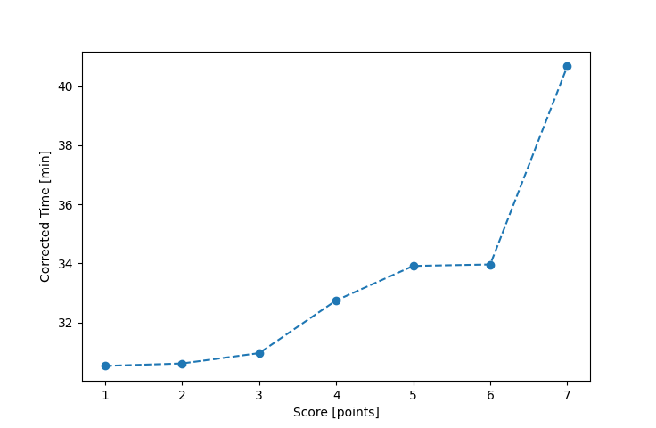

| Wind: | 2-3 (BFT) |
|---|---|
| RC: | Nick_H , Lewis_V |
| Date: | September 11, 2022 |
| Notes: | M3 Port |
| Rank / Score | Name | Boat | Input Time [mm:ss] | Input Offset [mm:ss] | Race Time [mm:ss] | Race Time [s] | Handicap | Corrected Time [s] | Corrected Time [mm:ss] |
|---|---|---|---|---|---|---|---|---|---|
| 1.0 | Rod_H | LASEM | 27:45 | 00:00 | 27:45 | 1665 | 0.97300 | 1711 | 28:31 |
| 2.0 | Barry_O | HLR14 | 33:22 | 00:00 | 33:22 | 2002 | 1.11700 | 1792 | 29:52 |
| 3.0 | Ian_O | SF | 31:20 | 00:00 | 31:20 | 1880 | 1.00400 | 1873 | 31:13 |
| 4.0 | Bill_P | SF | 31:47 | 00:00 | 31:47 | 1907 | 1.00400 | 1899 | 31:39 |
| 5.0 | David_Bu | SF | 35:16 | 00:00 | 35:16 | 2116 | 1.00400 | 2108 | 35:08 |
| 6.0 | Matt_L | F5 | 33:59 | 00:00 | 33:59 | 2039 | 0.96600 | 2111 | 35:11 |
| 7.0 | Matt_T | SF | 36:42 | 00:00 | 36:42 | 2202 | 1.00400 | 2193 | 36:33 |
| 8.0 | Jim_S | SF | 39:42 | 00:00 | 39:42 | 2382 | 1.00400 | 2373 | 39:33 |

Application Notes:
All race results are unofficial
View source code at https://github.com/cessnao3/portsmouthracecalc/